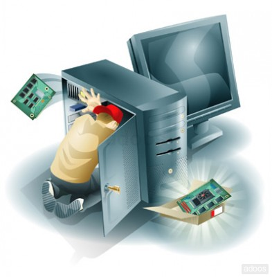

BACHILLER ACADEMICO
Establecimiento: COLEGIO BRASILIA BOSA IED.

TECNICO EN SISTEMAS
Establecimiento: SENA, CENTRO DE ELECTRICIDAD, ELECTRONICA Y TELECOMUNICACIONES.
Me desempeño como un buen soporte tecnico a nivel general en cualquier novedad que se presente.
InformacionSoporte centrado tanto en hardware como en software.

Se realiza tres tipos de mantenimiento, repotenciar equipo, arreglar piezas, ajustar cableado, entre otros.

Se realiza mantenimiento, soporte, cambio de piezas, cambio de tonner, entre otros.
Se realiza soporte a cualquier version de office, funciones basicas del equipo a traves del sistema operativo, soporte en software, configuracion de conexiones remotas, configuracion de vpn, entre otros.
Dispocision para el aprendizaje continuo y adaptabilidad para las nuevas tecnologias, entender conceptos basicos de tecnologia y excelente servicio al cliente o en cuyo caso usuario quien reporte una novedad o alguna falla en cualquier ambieto descrito anteriormente.
InformacionBachiller académico y Técnico en sistemas certificado. Con experiencia en soporte técnico de primer nivel, servicio al cliente y soporte a técnicos de campo, actitud para aprender y disposición para realizar diferentes tareas en cuanto al área requerida.
InformacionFunciones realizadas: Soporte presencial y remoto de hardware y software a equipos de cómputo, impresoras y teléfonos, mantenimiento preventivo y correctivo a equipos requeridos, manejo de base de datos y actualización a los mismos, administrar buen funcionamiento de extensiones telefónicas y antivirus, preparación de equipos a nuevos trabajadores ingresados a la compañía, soporte de office diferentes versiones, preparación de áreas audiovisuales (sonido, cámara y video), soporte por medio de herramientas como help desk gestionando tickets, manejo de proveedores para compra de piezas, equipos entre otras necesidades.
InformacionEstudios finalizados de manera satisfactoria.
Establecimiento: COLEGIO BRASILIA BOSA IED.
Establecimiento: SENA, CENTRO DE ELECTRICIDAD, ELECTRONICA Y TELECOMUNICACIONES.